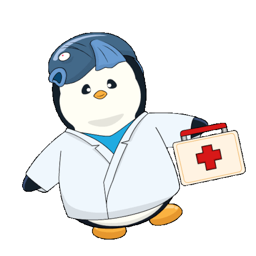

<div class="container-fluid">
  <nav class="navbar navbar-expand-lg bg-body-tertiary" style="font-size: large;">
    <div class="container-fluid">
      <a style="color: white ;font-size: 30px; margin-left: 30px ;font-weight: bold; font-family: 'Trebuchet MS', 'Lucida Sans Unicode', 'Lucida Grande', 'Lucida Sans', Arial, sans-serif;"
        class="navbar-brand" href="#">Parkinson's Disease Detection</a>
      <button class="navbar-toggler" type="button" data-bs-toggle="collapse" data-bs-target="#navbarNavAltMarkup"
        aria-controls="navbarNavAltMarkup" aria-expanded="false" aria-label="Toggle navigation">
        <span class="navbar-toggler-icon"></span>
      </button>
      <div class="collapse navbar-collapse" id="navbarNavAltMarkup">
        <div class="navbar-nav ms-auto" style="padding-right: 30px;">
          <a style="color: white; padding-right: 40px;" class="nav-link active ni" aria-current="page"
            routerLink='home'>HOME</a>
          <a class="logout" style="color: white; padding-right: 40px;" class="nav-link active ni" aria-current="page"
            (click)="logout()">Logout</a>
          <!-- <a style="color: white;" class="nav-link active ni" aria-current="page" href="#aabout">ABOUT</a> -->
        </div>
      </div>
    </div>
  </nav>
</div>

<div class="chatbot-container">
  <button class="btn" (click)="hideChatbot=true" (dblclick)="hideChatbot=false" style="color: red; margin-left: 90%;">X</button>
  @if (hideChatbot==false) 
  {
    <div class="chatbot" style="color: #3f51b5; font-size: 20px;">
      <p style="margin-top: 10px;"> Chatbot</p>
      <hr>
      <p *ngIf="!selectedQuestion">How can I assist you today?</p>
      <button *ngIf="!selectedQuestion" class="btn btn-primary" (click)="askQuestion(1)"> What is Parkinson's Disease?</button>
      <button *ngIf="!selectedQuestion" class="btn btn-primary" (click)="askQuestion(2)">How can Parkinson's Disease be
        detected?</button>
      <button *ngIf="!selectedQuestion" class="btn btn-primary" (click)="askQuestion(3)">What are the symptoms of
        Parkinson's Disease?</button>
      <p *ngIf="selectedQuestion">{{ selectedQuestion }}</p>
      <p *ngIf="selectedAnswer" style="color: black; font-size: 18px;">{{ selectedAnswer }}</p>
      <button *ngIf="selectedQuestion" class="btn btn-secondary" (click)="resetSelection()">Back</button>
    </div>
  }
  
</div>
<router-outlet></router-outlet>